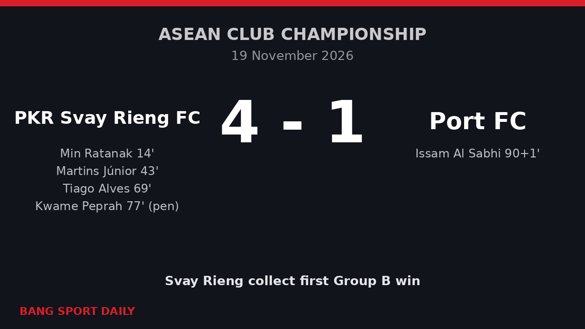

柴桢4-1横扫泰港重燃出线希望，东盟俱乐部锦标赛迎首胜
敏拉塔纳克、马丁斯·儒尼奥尔、蒂亚戈·阿尔维斯与佩普拉相继建功，柬埔寨冠军主场大胜锁定B组关键3分

金边——周四，柬埔寨柴桢足球俱乐部（PKR Svay Rieng FC）在德崇国家体育场打出了一场扬眉吐气的翻身仗，以4-1痛击来访的泰国泰港队（Port FC），重新点燃了在东盟俱乐部锦标赛（Shopee Cup）中的晋级希望。
在10月8日首轮小组赛客场0-6惨败于马来西亚劲旅柔佛新山（Johor Darul Ta’zim）后，这支柬埔寨超级联赛卫冕冠军迅速调整姿态，用一场极具穿透力的进攻风暴，拿下了2026–27赛季Shopee杯B组的首个3分。

藤井亮运筹帷幄，主队半场掌控大局
比赛开场仅2分钟，柴桢中场藤井亮（Ryo Fujii）便用一脚极具威胁的远射吹响了进攻号角，考验了泰港门将法尔克斯高（Michael Falkesgaard）。泰港前锋顺素普-贝尔（Jude Soonsup-Bell）在第11分钟还以颜色，但他的低射被柴桢门将桑韩昆（Sang Hankhun）稳稳没收；仅仅三分钟后，场上僵局便被彻底打破。
第14分钟，藤井亮在中场送出一记精妙挑传，洞穿了泰国球队的防线，敏拉塔纳克（Min Ratanak）心领神会反越位成功，面对出击的法尔克斯高轻巧挑射破门。第17分钟，加纳前锋夸梅·佩普拉（Kwame Peprah）本有机会扩大战果，他在禁区内扛住埃里克·斯维亚特琴科（Erik Sviatchenko）后起脚，可惜皮球高出横梁。柴桢的攻势在第43分钟再次收到成效：藤井亮左路策动反击，马丁斯·儒尼奥尔（Martins Júnior）得球后内切晃过尼迪蓬·色拉农（Nitipong Selanon），随即打出一记贴地斩直钻球门近角，主队带着两球优势进入更衣室。
阿尔维斯与佩普拉锦上添花

易边再战，柴桢队节奏不减。第69分钟，在主队持续的高压围攻之下，蒂亚戈·阿尔维斯（Tiago Alves）近距离包抄破门，将领先优势扩大至三球。8分钟后，佩普拉在禁区内制造点球，并在第77分钟亲自主罚命中，骗过法尔克斯高将比分改写为4-0。
比赛尾声阶段，泰港屋漏偏逢连夜雨。第89分钟，柴亚蓬·奥通（Chaiyaphon Otton）因一次鲁莽凶狠的犯规被主裁判直接出示红牌罚下。伤停补时第91分钟，阿曼前锋伊萨姆·苏卜希（Issam Al Sabhi）为客队扳回一球挽回颜面，但已无碍大局。
「面对来自泰国的对手，这是一场至关重要的对决，」马丁斯·儒尼奥尔在赛后接受赛事官方采访时表示，「向我的队友们道一声祝贺，今天每个人的发挥都非常出色。」
B组出线格局生变
这场大胜让主教练马特·麦康基（Matt McConkey）麾下的柴桢在前两轮战罢积得3分。在周四进行的B组其他比赛中，柔佛新山3-1力克越南河内公安（Công An Hà Nội），印尼万隆（Persib Bandung）则以6-0血洗缅甸掸联（Shan United）。目前柔佛新山与万隆同积6分领跑积分榜。
泰港队继首轮在曼谷1-3不敌万隆后遭遇两连败，暂时在小组中垫底。12月10日，柴桢将迎来下一轮小组赛较量，他们将奔赴客场挑战河内公安。